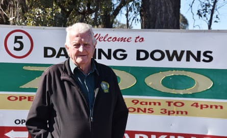

The NSW school teacher maimed in a lion attack at a Queensland zoo at the weekend is struggling to come to terms with losing her arm, her family says.
The woman, in her 50s, has been identified as Parkes school teacher Joanne Cabban.
Darling Downs zoo owner Steve Robinson told media that Cabban, his sister-in-law, was visiting on school holidays, something she has done regularly for 20 years.
Cabban lost her arm in the attack by a lioness at about 8.30am on Sunday morning. She was in a staff-only area of the zoo, which is about 45 minutes south of Toowoomba.
- Sign up for Guardian Australia’s breaking news email
The attack took place near a holding enclosure, which contained the lions, while staff cleaned the main enclosure.
Robinson said Cabban was “very much on a rollercoaster emotionally as she comes to grips with the enormity of what has happened”.
Robinson said Cabban was still “heavily drugged with pain killers” but that her condition was listed as stable, as it has been since she arrived at the hospital via helicopter Sunday.
“I don’t believe that she has been allowed out of bed yet,” he said.
Workplace Health and Safety Queensland is investigating the incident. Nobody else saw the attack take place, though others were nearby.
Robinson said his wife was hoping to be able to speak to her sister about the details of the attack shortly.
Darling Downs zoo owner Steve Robinson.Photograph: Andrew Messenger/The Guardian
“Steph [Cabban’s sister] is hoping to be able to coax some precise details out of her later today or, more likely, tomorrow,” he told Guardian Australia.
A spokesperson for Workplace Health and Safety Queensland said their probe is “still an active and ongoing investigation”.
Robinson credited another member of staff, a carnivore keeper with first aid experience, with saving Cabban’s life. She used his wife’s leather belt as a makeshift tourniquet to stem the bleeding, and then applied a thermal blanket before paramedics arrived.
The Darling Downs zoo is privately owned and independent, employs 22 staff, including four lion keepers, and has nine lions.
The zoo uses “protected contact”, which means nobody enters an enclosure with an adult lion, he said.
The attack took place at one of the zoo’s oldest enclosures, which has existed since it opened 20 years ago.
Robinson said his sister-in-law often took photos to produce calendars for the zoo.
He said the incident was not the lion’s fault and people should not blame the animal. It has not been put down.
“There’s no aggression, and there’s no nastiness, anything like that at all. The best we can come up with at this stage is the lion was just playing,” he said.
“Now how she was playing with a human in that circumstance is yet to be determined.”
Robinson said it was the first time an incident like this had happened at the zoo.
“That enclosure that we’re looking at was one of our original ones. It’s been there for 20 years, as I said before, without anything like this happening,” he said.